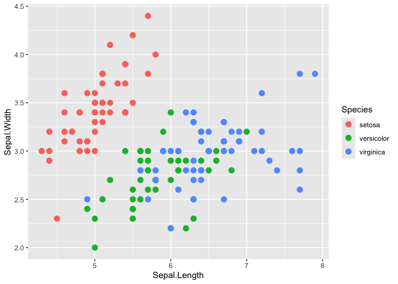
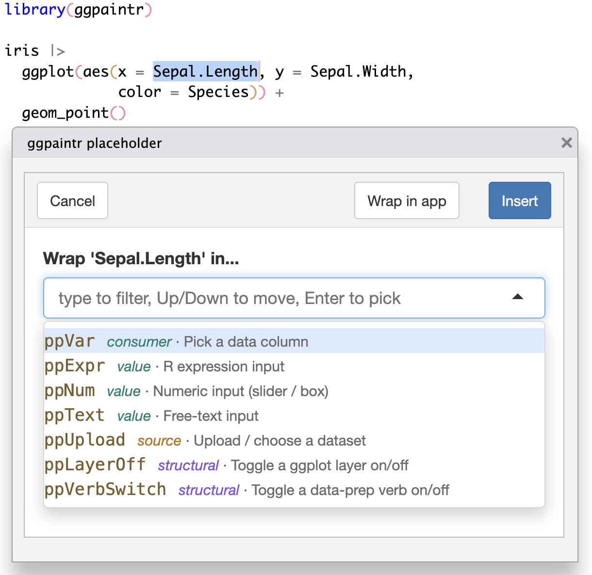

Overview
ggpaintr turns a ggplot-like formula into a running Shiny app. You write a single ggplot() call — passed directly as an unquoted expression (the primary form), or as a string (the fallback) — and drop placeholder keywords (ppVar, ppText, ppNum, ppExpr, ppUpload) anywhere a value would normally go. ggpaintr does the rest: each keyword becomes an input widget, the same parsed object drives the UI, the plot, and a live code pane, and editing any widget re-renders the plot.
No Shiny UI or server code required. If you can write a ggplot call, you can ship an interactive version of it.
Installation
# Install the development version from GitHub:
# install.packages("pak")
pak::pkg_install("willju-wangqian/ggpaintr")Usage
library(ggpaintr)
# Primary form: pass the ggplot() call directly as an unquoted expression.
ptr_app(
ggplot(data = iris, aes(x = ppVar, y = ppVar)) +
geom_point(aes(color = ppVar), size = ppNum) +
labs(title = ppText) +
facet_wrap(ppExpr)
)That single call returns a running Shiny app. Each placeholder in the formula becomes one widget:
- the three
ppVartokens → column pickers populated fromiris, -
ppNum→ a numeric input (point size), -
ppText→ a text input (plot title), -
ppExpr→ a code box for the facet spec (e.g.vars(Species)).
library(ggpaintr) also attaches ggplot2, so bare ggplot() / aes() / geom_*() calls work directly in the formula expression. To reuse a formula across calls, store it with rlang::expr() and splice it in with !! — f <- rlang::expr(ggplot(...)); ptr_app(!!f). The string form (ptr_app("ggplot(...)")) remains a supported fallback, handy when a formula is built or fetched as text. To swap in a custom page shell or theme, write a thin wrapper on top of the public primitives.
The ptr_app() call above needs a Shiny session to run, so it is not evaluated here. But each pp* token is a plain identity function, so the same formula without ptr_app() is ordinary, runnable ggplot2 — drop the placeholders into your plot, sketch it as a static chart first, then wrap it in ptr_app() when you want the widgets:
ggplot(iris, aes(x = ppVar(Sepal.Length), y = ppVar(Sepal.Width), color = ppVar(Species))) +
geom_point(size = ppNum(3)) +
labs(x = "Sepal.Length", y = "Sepal.Width", color = "Species")
Here ppVar(Sepal.Length) evaluates to Sepal.Length and ppNum(3) to 3, so the chart renders exactly as plain ggplot2 — the tokens only become widgets once the expression is handed to ptr_app().
Handing that exact expression to ptr_app() launches the interactive app, and the value inside each placeholder becomes that widget’s initial selection — so the app boots with x = Sepal.Length, y = Sepal.Width, color = Species, size = 3 pre-selected and renders the very same figure straight away, ready to be re-pointed at other columns:
ptr_app(
ggplot(iris, aes(x = ppVar(Sepal.Length),
y = ppVar(Sepal.Width),
color = ppVar(Species))) +
geom_point(size = ppNum(3))
)The expression need not be inline. Capture it once with rlang::expr() and reuse it — ptr_app() resolves a formula stored in a variable by name (no !! needed), so you can build, inspect, or share the formula before launching the app:
RStudio addin
ggpaintr ships an RStudio addin that turns a plain ggplot expression into a placeholder formula without typing the pp* tokens by hand. Highlight a piece of your code, run the addin, and pick a placeholder from a command palette — the selection is rewritten in place (mpg → ppVar(mpg); nothing highlighted inserts ppVar() with the cursor between the parens). The list is ordered by what you highlighted — a bare name surfaces the column pickers (ppVar), a number ppNum, a string ppText, a call the layer/verb toggles (ppLayerOff / ppVerbSwitch) — and any placeholder you registered this session appears automatically. The palette’s Wrap in app button wraps the whole selection in { … } |> ptr_app() to scaffold a runnable app.

Run it from the Addins menu ▸ ggpaintr placeholder. To bind a keyboard shortcut (the addin must be installed, not just load_all()-ed, to appear in the dialog):
- Tools ▸ Addins ▸ Browse Addins…, then the Keyboard Shortcuts… button. (Or Tools ▸ Modify Keyboard Shortcuts… and type “ggpaintr” in the search box.)
- Click the Shortcut cell on the ggpaintr placeholder row.
- Press your combination — e.g. Cmd+Shift+G (macOS) or Ctrl+Shift+G (Windows/Linux). Any free combination works.
- Apply.
More topics
vignette("ggpaintr-tutorial")— Tutorial. A guided walk from a one-lineptr_app()formula, through defining your own placeholders (every argument of the three constructorsptr_define_placeholder_value()/_consumer()/_source()), to embedding several plots in your own Shiny app withptr_ui()/ptr_server()and sharing one control across them viaptr_shared()/ptr_shared_panel()/ptr_shared_server(). Opens with a tour of the five built-in placeholder keywords.Safety — chapter of the ggpaintr book (development-version docs). What
expr_checkdoes and when (never) to turn it off, the denylist + AST-walker safety model, and the upload trust boundary.Using ggpaintr from an LLM with ellmer — chapter of the ggpaintr book (development-version docs). Wire ggpaintr up as an LLM-callable tool with ellmer: register the primer and the topic-lookup tool, inspect what the model sees, swap providers/models, and test without spending tokens.
The pkgdown reference lists every exported function. The ggpaintr book is the longer, book-length introduction (documents the development version).